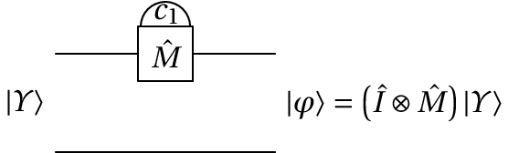
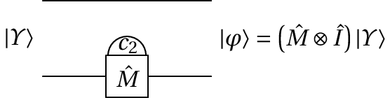
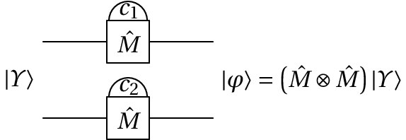

Jaime Villate. Faculdade de Engenharia da Universidade do Porto
É possível construir uma porta quântica de medição do valor de um dos qbits. A figura seguinte mostra o diagrama de circuito da porta que mede o valor do primeiro qbit, num sistema com dois qbits. representa o operador identidade, que não altera o valor do segundo qbit, e é o valor medido do primeiro qbit, que poderá ser 0 ou 1.
O estado de entrada é uma combinação linear dos 4 possíveis estados de dois cbits:
A probabilidade de se obter o valor é a soma dos quadrados dos módulos dos coeficientes correspondentes aos cbits em que o primeiro cbit é 0:
e a probabilidade do resultado é a soma dos quadrados dos módulos dos coeficientes correspondentes aos cbits em que o primeiro cbit é 1:
Após a medição o estado é alterado para . Se o resultado da medição for o estado resultante será:
Mas se o resultado for , o estado final será:
A informação representada pelo estado inicial são os 4 números complexos , , e . Após a medição, perde-se parte dessa informação e não é possível prever de antemão que parte da informação será perdida no processo de medição.
Podíamos pensar em armazenar o estado inicial antes da medição e após a medição restaurar esse estado. Mas existe um princípio da mecânica quântica que mostra que é impossível "clonar" o estado quântico de um sistema.
Se a medição for feita no segundo qbit, como no diagrama de circuito seguinte, obter-se-á um valor igual a 0 ou 1.
A probabilidade de se obter o valor é:
e a probabilidade do resultado é:
Se o resultado for o estado final será:
E se o resultado for , o estado final será:
A medição dos valores dos dois qbits conduz a 4 possíveis resultados para . É fácil ver que as probabilidades desses quatro resultados é igual, independentemente da ordem das duas medições, ou se as duas medições forem feitas em simultâneo, como no diagrama seguinte:
A tabela seguinte mostra os possíveis resultados de , e o estado final , e as probabilidades desses resultados.
| Probabilidade | ||
|---|---|---|
| (0,0) | ||
| (0,1) | ||
| (1,0) | ||
| (1,1) |
Num sistema de qbits, após a medição dos valores de todos os qbits o estado passa a ser um dos possíveis estados de qbits.
Num algoritmo de computação quântica é importante começar sempre com o mesmo estado inicial. O único caso em que não existe incerteza do estado dum sistema de qbits é quando esse estado for um dos estados próprios, ou seja, um dos possíveis estados de cbits. Como foi referido no fim da seção anterior, após uma medição de todos os qbits, o estado fica num dos estados de cbits. Como tal, as portas de medição são usadas também para preparar o estado inicial do sistema.
É habitual usar sempre como estado inicial o estado em que todos os cbits são iguais a zero, porque normalmente esse estado corresponde ao estado quântico de menor energia. O estado de menor energia pode ser atingido também por meios físicos, sem necessidade de usar as portas de medição; por exemplo, arrefecendo um sistema físico consegue-se diminuir a sua energia interna até ficar com energia mínima.
Quando for difícil usar meios físicos para que o sistema fique nesse estado inicial, basta medir os valores de todos os qbits e a seguir aplicar a porta lógica XOR nos qbits em que se obteve o resultado igual a 1, para que o valor do respetivo cbit passe a ser 0.